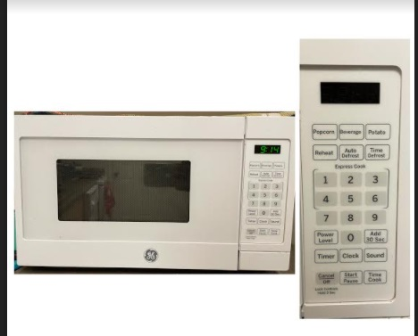
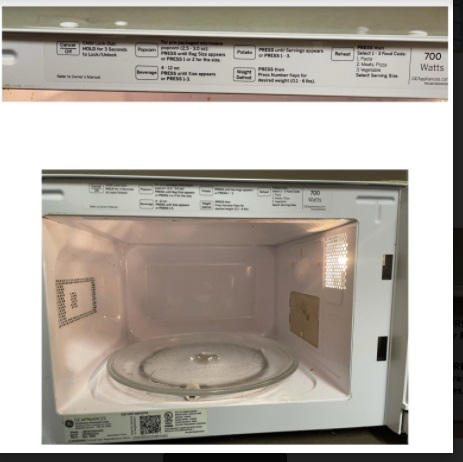
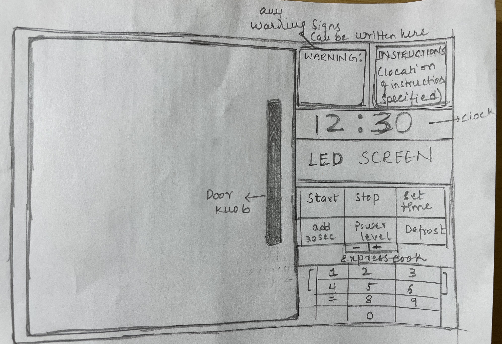

Project 1: The microwave interface
This is the microwave oven from my apartment


First picture shows the microwave and the panel which consists of buttons and LED screen.
Second picture shows the inside of microwave and instrctions written on it.
Control interface in operation

Issues with current design
- The first thing I noticed about the microwave is that it does not have doorknob and the door opening option not noticeable. One can open it by pushing the button like thing at the bottom right of the oven and pull the door. You need to use both hands for opening the door. Having a doorknob makes it easier.
- Clock function does not work properly. It provides user with the wrong time. I tried resetting it but it was still the same. Once we start cooking the time disappears.
- While using the timer function to cook food and if we stop it in the middle of its operation, the LED screen won’t display the “END” message. It stops and display the time left.
- User can’t exactly know how to operate functions like power function, auto defrost, time defrost without taking a look at the instructions.
- Next thing is about the instructions which are written inside the microwave. You can see it once you open the door. Most people would not look for the instructions inside the microwave. A notice place outside the oven would be helpful.
- In the picture attached above we can see the instructions. One of the instructions specifies about weight defrost but, on the panel, we have auto defrost option and time defrost options which would confuse the user while operating.
- The next issue is the transparent glass which helps us look inside the microwave oven is small. It does not give a clear view of our food inside when we are checking upon it.
- The microwave is not equipped for a visually impaired person to use.
Uses of a microwave oven
Common uses
- Reheating food is the most basic use of microwave oven. we usually put any dish in the microwave to re-heat, it gets warm in seconds carefully. It makes food warn and brings it back to original form.
- Microwave oven is used in defrosting the frozen vegetables or meat very quickly without the excessive washing, draining and wasting the water.
- The microwave oven is used to make pop corns very quickly
Rare uses
- We can use microwave for cooking an entire dinner in Under 10 for any recipe that calls for braising, poaching, or steaming.
- Microwaves oven is also used in the baking cakes and breads and it is easy and quick for making delicious different varieties of cakes.
- Decrystallizing honey.
- Heating up Health Aids
- Disinfecting plastic cutting boards.
The interface makes heating food or defrosting food very easier. It consists of buttons which are mapped to their functions. The buttons have the instructions written on them, which a makes the user familiar with the operations. If one wants to cook food in the microwave then, few steps should be performed like setting the power level and entering the quantity of food and the time it takes for cooking completely. So, user should be familiar with operating the microwave oven.
User interaction with microwave
The user opens the door of microwave by using the doorknob and places the food taken in microwavable container on the top of turntable plate and then the closes the door. One should use microwavable containers while using the microwave. Depending upon the need of user the operation will be performed. If the user needs their food to be reheated or defrosted, he/she can do it by pressing the buttons present on the panel for the oven to start its function. Each button has its function written on it. Once the microwave is on and the function and time are entered it will start performing. When the food is ready, the user will be alerted by a message “THE END” on the LED screen along with-it making continuous beep sound.
Microwave supporting the user to figure out how to make it work
When we look at the microwave, we notice that it has a door with transparent glass along with a panel on the right side of it. The inside of microwave consists of a light and turntable plate which can be removed and cleaned frequently. The transparent glass helps us in looking inside the oven while it’s working, and the panel consists of a small LED screen and buttons. The LED screen displays messages which makes user understand if the oven is on or off, the time remaining, whether the food is done or not. There are buttons with their operation written on them to make user understand what operations the microwave will perform. The operations would be like on/start, off/pause, reheat, defrost, power level, etc. The microwave also provides instructions on how to make the best use of these functions very specifically.
Microwave providing feedback to the user
The microwave oven consists of a LED screen which displays information. When user clicks a button on panel, the screen displays a message which gives user a confirmation that the function is being performed. The screen displays various messages which will help the user to figure out what is happening with the microwave. The screen helps keep the communication between user and microwave interactive.
Common mistakes one can make with current design
- The first mistake would be designing microwave with so many buttons. Having a greater number of buttons with different kind of operations would only confuse the user and eventually we would avoid using the microwave.
- The instructions are placed inside the microwave which is not very noticeable by the user.
- Many buttons available on panels are almost never used by the user. So unnecessary buttons present on the panel will make it look more complicated.
- To set up power level user needs to have a clear understanding of what level is required for different kinds of foods.
- When the user forgets to close the door of the micr owave the light inside will not go off, which results in waste of electricity. It would be helpful if light goes after a minute.
Improvements made on the control interface

The sketch shows the changes that are made
- The main idea is to keep the design easy and simple
- A door knob is added which is not there in the microwave present above.
- The transparent glass is bigger than the previous one for the better view.
- Warning and instruction signs are added at the panel for making it easier for the user to understand
- A Separate screen is installed for the clock which show time
- Most of the buttons which are never used are removed. only the ones which are used for maximum extend are placed.
- A new button is added under the power level which helps in increasing and decreasing the power level. The buttons show '+' and '-' shows increase and decrease options.